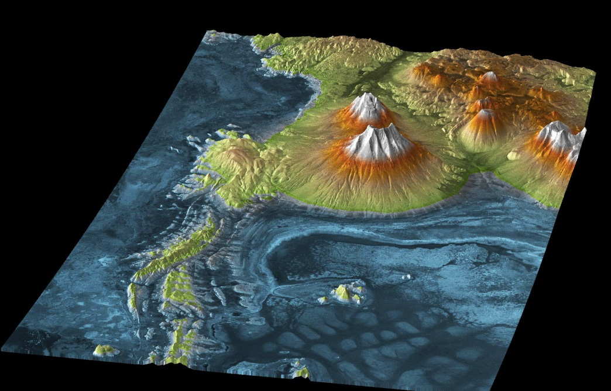
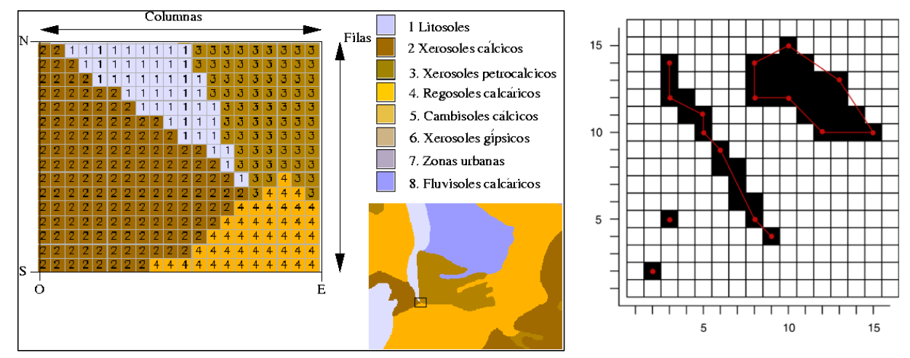

Modelos de representación de los datos espaciales en un SIG
Modelo Ráster
Los SIG ráster se utilizan para representar datos continuos, sin limites marcados, zonas de transición y datos que cambian (altitudes, precipitaciones, …) aunque, de forma más imprecisa, también permiten representar entidades.

Ilustración: Modelo de elevación digital TERRA-X-SAR
La realidad se representa como una retícula rectangular dividida en celdas o píxeles de igual tamaño donde las celdas no se solapan: los datos se definen por la posición en una fila y columna, localización relativa, coordenadas (x,y).

Los formatos de ficheros de datos ráster son ASCII y ficheros con extensiones .bil, .bin, .bsq y .grid.
Los ficheros de dibujos mapas y fotos tendrán por lo general extensiones .tiff, .jpeg, .gif, .pnp y .eps.
Importante de señalar es que cada capa ráster genera dos tipos de archivos: en uno se guardan los valores de las celdas (formato ASCII) y en el otro se guarda la información general de la retícula, de la leyenda, orientación, resolución, tipo de variable, número de filas y columnas, etc. Además, los archivos ráster no tienen tipología, siendo la grilla la que almacena la información numérica en las celdas o bandas de la imagen.
Obra publicada con Licencia Creative Commons Reconocimiento Compartir igual 4.0